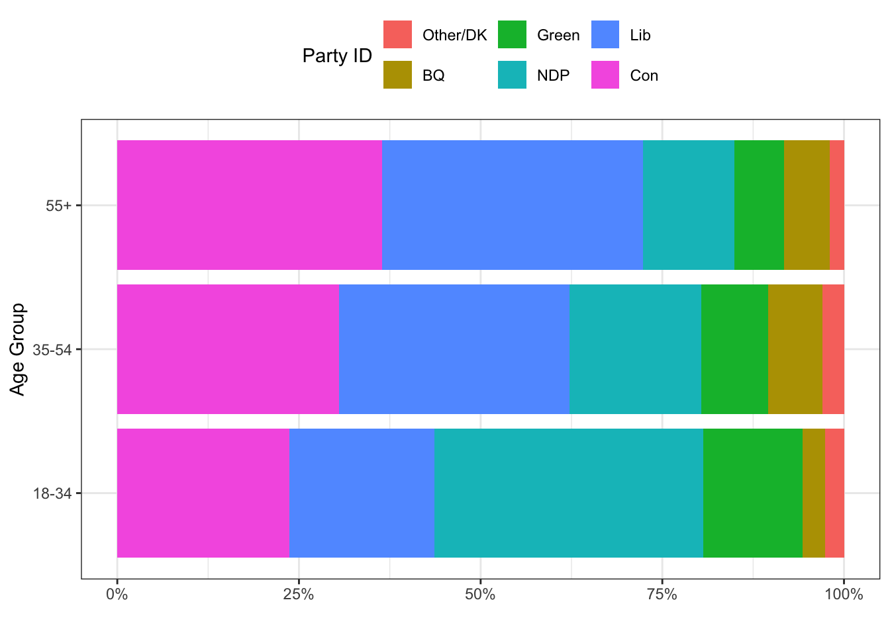
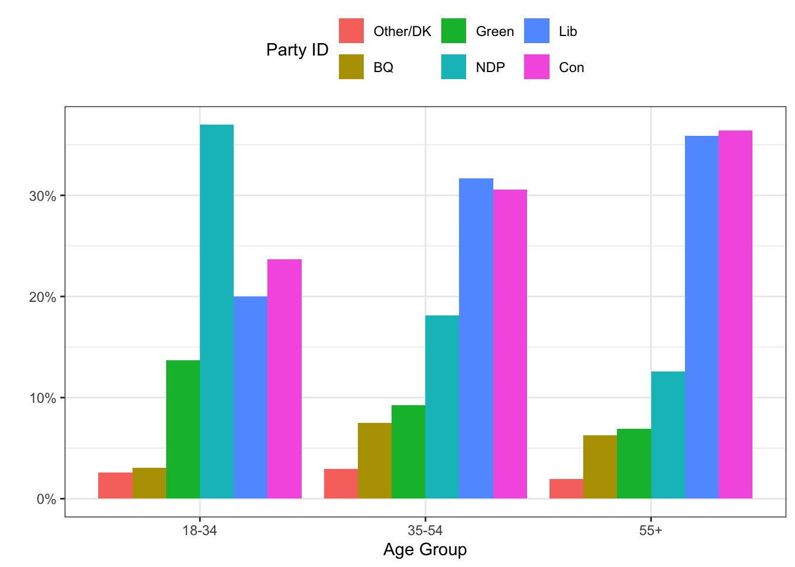
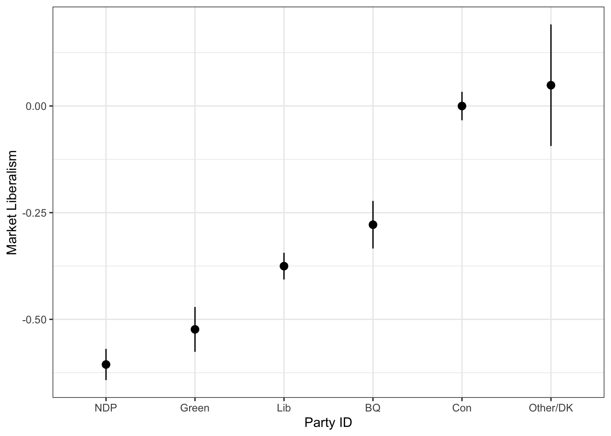
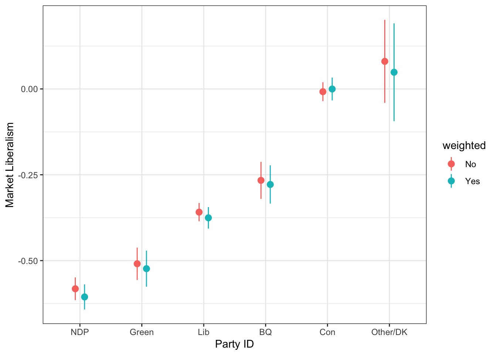

Chapter 6 Handling Complex Survey Data
The models we have talked about already assumed a simple random sample. Obviously, simple random sampling does not always reflect how the data were collected, especially for surveys. Surveys often use stratified or cluster random sampling to reduce costs and increase precision. In these settings, the models need to accommodate themselves to this different sampling structure. The survey package in R allows you to specify the particulars of your survey design and then use the survey design object as data to some models that are specifically designed to deal with complex survey data. Here, we’ll work through some of the options.
The svydesign() function in the survey package defines your sampling design for the data. There are a few arguments that make this possible.
idsare the primary sampling unit (PSU) for cluster-random sampling. If you’re doing doing cluster-random sampling, then useids=~1to indicate no PSU.strataare the strata used. The assumption is that the population is put in groups (strata) and that sampling is done within each one of those groups. If you haven’t stratified, then you can usestrata=~1.
weightsare probability weights - the inverse of the probability of being selected into the sample. If instead of probability weights, you are using replicate weights, you should usesvrepdesign().
We’re going to use some data from the Canadian Election Study. The weights here account for both province of respondent and phone ownership rates (land line, wireless, both). In this case, the stratum is the province and weights are based on phone ownership typology.
load("data/ces19.rda")
library(survey)
d <- svydesign(ids=~1, strata=~province19, weights=~weight_CES, data=ces19)
d## Stratified Independent Sampling design (with replacement)
## svydesign(ids = ~1, strata = ~province19, weights = ~weight_CES,
## data = ces19)You Try It!
Using the GSS 2016 data, identify the appropriate survey design object. Note that the weights we are going to use are wtssnr and we are not going to specify the strata argument.
6.1 Frequency Distributions and Contingency Tables
Now, we can use the d object as input data to functions meant to deal with survey data. We can start with the descriptive functions. Two of the functions we’ve already looked at work here, too. The xt() and sumStats() functions from the DAMisc package take survey weights objects as input. For example, if we wanted to make a weighted frequency distribution of the pid variable (party id), we could do the following:
## $tab
## $tab[[1]]
## pid Freq
## Lib 32% (704)
## Con 32% (714)
## NDP 18% (401)
## BQ 6% (136)
## Green 9% (192)
## Other/DK 2% (53)
## Total 100% (2,200)
##
##
## $chisq
## NULL
##
## $stats
## list()
##
## attr(,"class")
## [1] "xt"The frequencies are weighted frequencies rounded to the nearest integer value. We could compare this to the unweighted frequencies:
## $tab
## $tab[[1]]
## Var1 Freq
## Lib 31% (674)
## Con 32% (709)
## NDP 19% (426)
## BQ 5% (115)
## Green 10% (218)
## Other/DK 2% (51)
## Total 100% (2,193)
##
##
## $chisq
## NULL
##
## $stats
## list()
##
## attr(,"class")
## [1] "xt"The xt() function is just a wrapper to the svytable() function which produces cross-tabulations from survey design objects. For example, we could do the same thing with:
## pid
## Lib Con NDP BQ Green Other/DK
## 704.02534 714.45985 401.07926 135.62555 191.91618 52.51284The benefit of the xt() function is more aesthetic than anything in that it takes the information and presents it in a way that is easier to digest (focusing on proportions/percentages, rather than counts).
You Try It!
Replicate our earlier descriptive analysis with weights. Look at the distribution of two variables we’re going to consider - aidhouse (the government should provide housing to the poor) and partyid (partisan identification).
- For now, just look at the univariate distributions.
- Make a bar plot of aidhouse and of partyid, each independently.
If we wanted to make a contingency table of pid by agegrp (age group), we could do that with xt().
## $tab
## $tab[[1]]
## pid/agegrp 18-34 35-54 55+ Total
## Lib 20% (69) 32% (228) 36% (407) 32% (704)
## Con 24% (82) 31% (220) 36% (412) 32% (714)
## NDP 37% (128) 18% (131) 13% (142) 18% (401)
## BQ 3% (11) 7% (54) 6% (71) 6% (136)
## Green 14% (47) 9% (67) 7% (78) 9% (192)
## Other/DK 3% (9) 3% (21) 2% (22) 2% (52)
## Total 100% (346) 100% (721) 100% (1,132) 100% (2,199)
##
##
## $chisq
## $chisq[[1]]
##
## Pearson's X^2: Rao & Scott adjustment
##
## data: svychisq(as.formula(paste0("~", var, "+", byvar)), d)
## F = 11.102, ndf = 9.9149, ddf = 27652.7701, p-value < 2.2e-16
##
##
##
## $stats
## $stats[[1]]
## statistic p-value
## Chi-squared 145.45405382 0.000
## Cramers V 0.18185921 0.000
## Lambda 0.03636364 0.002
##
##
## attr(,"class")
## [1] "xt"As people get older, they get more likely to identify with the mainstream Liberal, BQ, and Conservative parties and less likely to identify with NDP and Green parties. Again, the svytable() function could be used here, too, along with the svychisq() function to calculate the appropriate \(\chi^2\) statistic.
##
## Pearson's X^2: Rao & Scott adjustment
##
## data: svychisq(~pid + agegrp, d)
## F = 11.102, ndf = 9.9149, ddf = 27652.7701, p-value < 2.2e-16The time when svytable() might be more useful is if you wanted to make a graph of the responses. For example, let’s imagine we wanted to visualize these proportions. We could use a mosaic plot or a stacked bar chart of which people seem to be so enamored. Let’s look at a couple of examples.
library(tibble)
library(scales)
library(ggplot2)
tab <- as_tibble(tab)
ggplot(tab, aes(x=agegrp, y=n, fill=reorder(pid, n, mean))) +
geom_bar(stat="identity", position="fill") +
theme_bw() +
theme(legend.position = "top") +
scale_y_continuous(labels=percent) +
labs(x="Age Group",
y="",
fill="Party ID") +
coord_flip() 
In the example above, note that we were able to reorder the categories based on average sample size. This put the biggest category first and the smallest category last.
We could also make a side-by-side barplot with the following. Note that we turn the counts into percentages in the data by using the group_by() and mutate() functions.
tab <- tab %>%
group_by(agegrp) %>%
mutate(pct = n/sum(n))
ggplot(tab, aes(x=agegrp, y=pct, fill=reorder(pid, n, mean))) +
geom_bar(stat="identity", position="dodge") +
theme_bw() +
theme(legend.position = "top") +
scale_y_continuous(labels=percent) +
labs(x="Age Group",
y="",
fill="Party ID") 
You Try It!
Make the bar plots of partyid by college_ed
6.2 Summary Statistics
The sumStats() function from the DAMisc package also takes a survey design object as data. Just like the xt() function is a wrapper to the survey.table() and related functions, the sumStats() function is a wrapper to svymean(), svyquantile(), svyvar() and svyby() functions. Let’s look at the summary statistics for thoughts on market capitalism, the market variable.
## # A tibble: 1 × 10
## variable mean sd min q25 median q75 max n nNA
## <chr> <dbl> <dbl> <dbl> <dbl> <dbl> <dbl> <dbl> <dbl> <dbl>
## 1 market -0.285 0.414 -1 -0.553 -0.330 0 1 2743. 34.5We could even get summary statistics by some other variable, say agegrp:
## # A tibble: 3 × 11
## agegrp variable mean sd min q25 median q75 max n nNA
## <fct> <chr> <dbl> <dbl> <dbl> <dbl> <dbl> <dbl> <dbl> <dbl> <dbl>
## 1 18-34 market -0.418 0.420 -1 -0.777 -0.443 -0.110 0.777 436. 0.315
## 2 35-54 market -0.286 0.414 -1 -0.553 -0.330 0 1 935. 15.7
## 3 55+ market -0.242 0.404 -1 -0.553 -0.223 0 1 1372. 18.6You can even get summary statistics for more than one variable by age group.
## # A tibble: 6 × 11
## agegrp variable mean sd min q25 median q75 max n nNA
## <fct> <chr> <dbl> <dbl> <dbl> <dbl> <dbl> <dbl> <dbl> <dbl> <dbl>
## 1 18-34 continent 0.103 0.473 -1 0 0 0.330 1 434. 2.24
## 2 35-54 continent 0.118 0.470 -1 0 0 0.330 1 946. 4.08
## 3 55+ continent 0.100 0.473 -1 0 0 0.330 1 1381. 9.48
## 4 18-34 market -0.418 0.420 -1 -0.777 -0.443 -0.110 0.777 436. 0.315
## 5 35-54 market -0.286 0.414 -1 -0.553 -0.330 0 1 935. 15.7
## 6 55+ market -0.242 0.404 -1 -0.553 -0.223 0 1 1372. 18.6You Try It!
Make a graph of the means of aid_scale with \(95\%\) confidence bounds as a function of partyid from the US GSS data.
Just like above, it might be that you’re better off using svymean() and svyby() if you wanted to make a graph, because svymean() returns not only the mean, but the standard error as well. We could make a dot plot of means and confidence intervals like this:
out <- svyby(~market, by=~pid, d, svymean, na.rm=TRUE) %>%
as_tibble %>%
mutate(lower = market - 1.96*se,
upper = market + 1.96*se)
ggplot(out, aes(x=reorder(pid, market, mean), y=market)) +
geom_pointrange(aes(ymin=lower, ymax=upper)) +
geom_point() +
theme_bw() +
labs(x="Party ID",
y="Market Liberalism")
We could compare this to the un-weighted one if we wanted.
d0 <- svydesign(ids=~1, weights=~1, data=ces19)
out0 <- svyby(~market, by=~pid, d0, svymean, na.rm=TRUE) %>%
as_tibble %>%
mutate(lower = market - 1.96*se,
upper = market + 1.96*se)
out0 <- out0 %>%
mutate(weighted = factor(1, levels=c(1,2), labels=c("No", "Yes")))
out <- out %>%
mutate(weighted = factor(2, levels=c(1,2), labels=c("No", "Yes")))
out <- bind_rows(out0, out)ggplot(out, aes(x=reorder(pid, market, mean),
y=market,
colour=weighted)) +
geom_pointrange(aes(ymin=lower, ymax=upper),
position=position_dodge(width=.3)) +
geom_point(position=position_dodge(width=.3)) +
theme_bw() +
labs(x="Party ID",
y="Market Liberalism")
6.3 Estimating Models
The main modeling function for survey design objects is svyglm(). This will estimate linear binary and count models. The svykm() and svycoxph() function will do survival analysis models. The svyolr() function does ordered logit survey models. There is also a svymle() function that would allow you to maximize any likelihood function, so you could program other models as well.
tl;dr - these generally work with the post-estimation tools we’ve encountered so far. Rather than belaboring those points again, I’ll point you back to the sections on linear models and binary dependent variable models.
You Try It!
Use the last model you estimated in the linear models section and estimate it again here using survey weights.